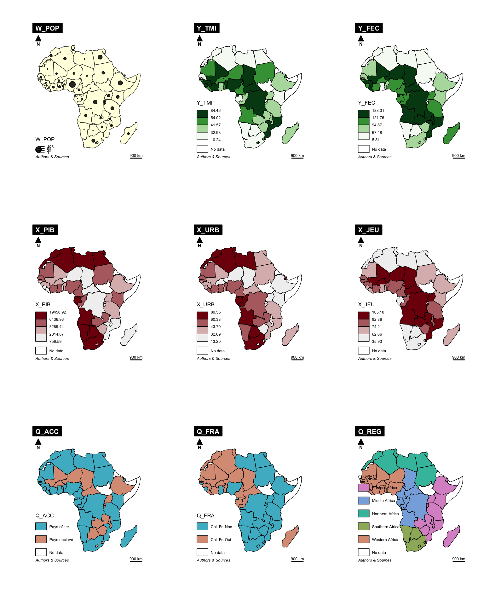
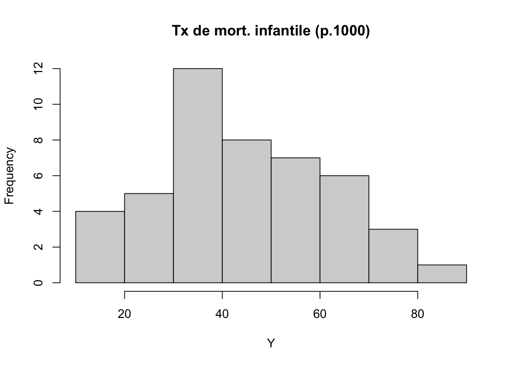
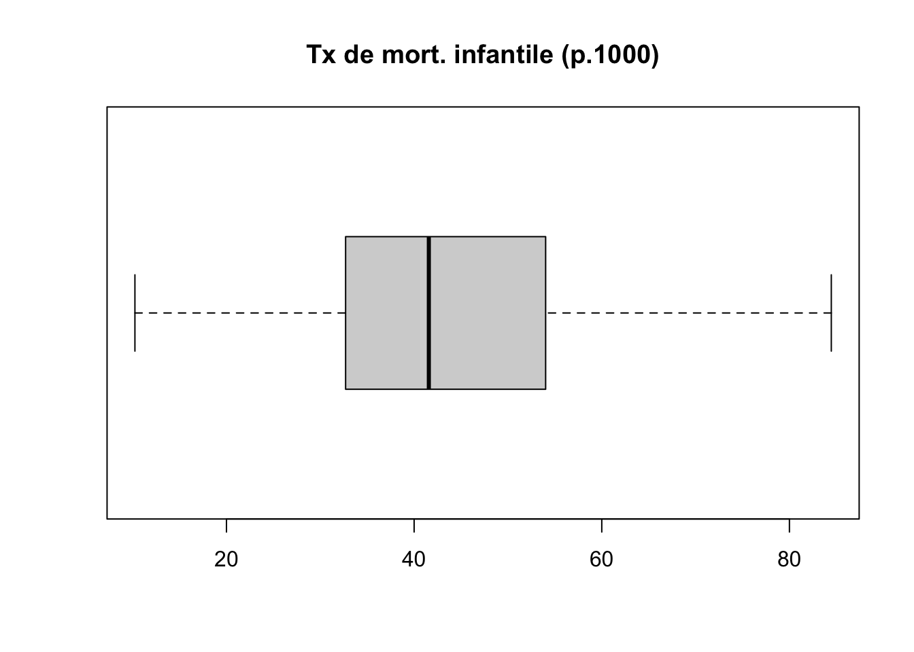
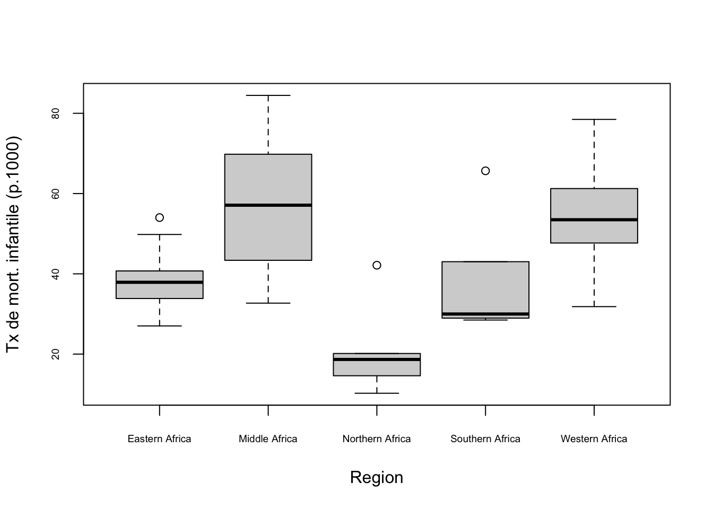
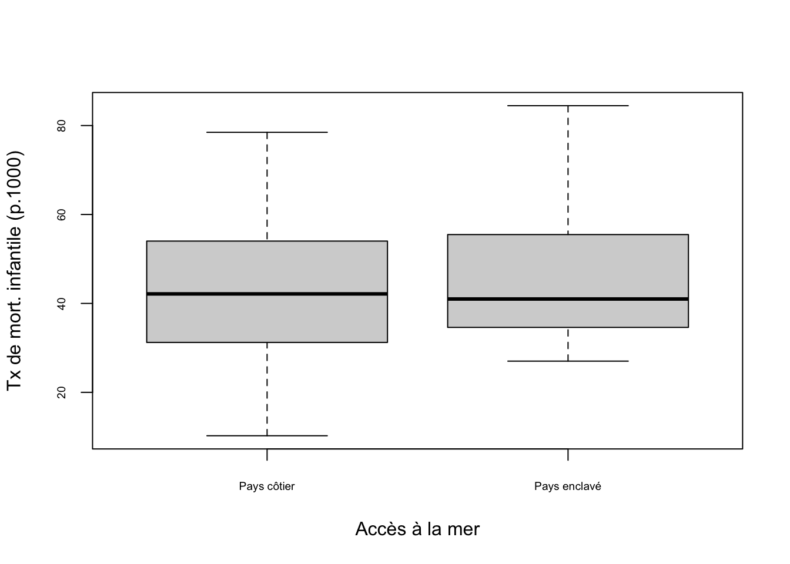
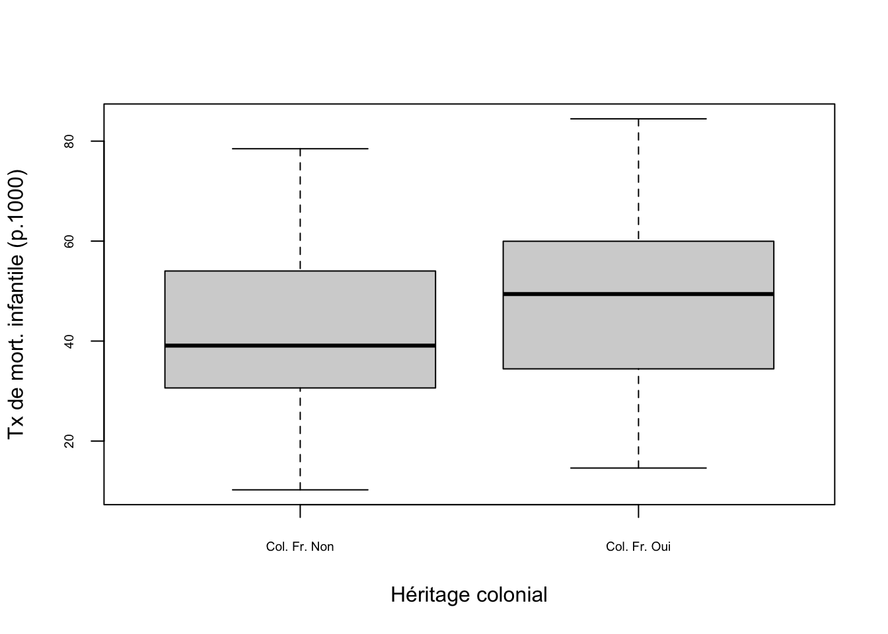
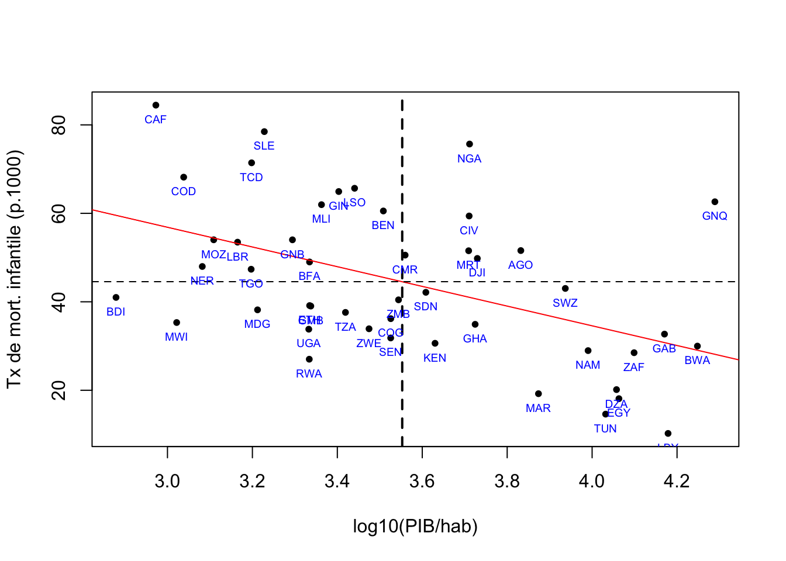
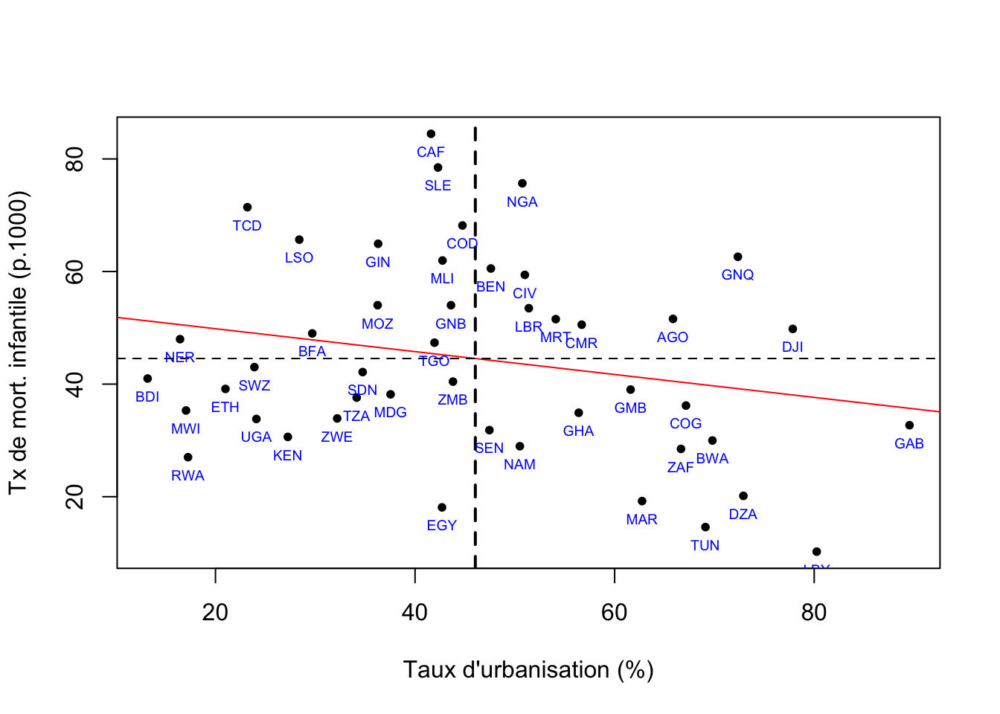
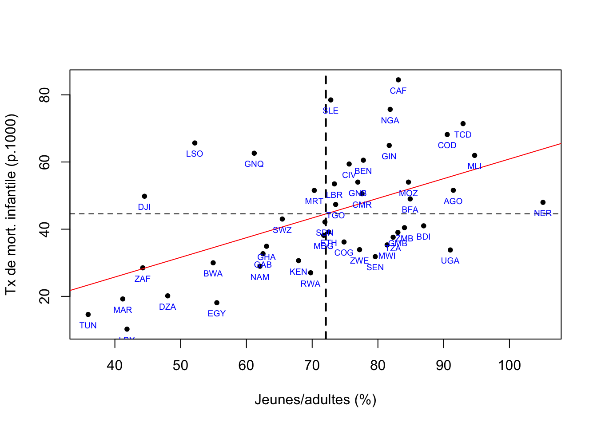

Application n°1
library(sf, quietly= TRUE,warn.conflicts = F)
library(dplyr, quietly = TRUE,warn.conflicts = F)
library(knitr)
library(mapsf)
library(car,warn.conflicts = F,quietly=T)Pour des raisons de cohérence pédagogique, il est important que certains tableaux de données soient présents tout au long des cours qui seront dispensés pendant l’école d’été CIST 2022-2023. Compte-tenu des perspectives différentes qu’implique leur traitement, nous avons besoin d’au moins deux tableaux de nature différente :
- un tableau de données sociologiques ou économiques individuelles permettant de décrire le comportement d’acteurs développant des stratégies ou des pratiques en fonction de déterminants liées à des attributs personnels, familiaux ou contextuels.
- un tableau de données spatiales agrégées décrivant des variables relatives à un agrégat de population localisée dans l’espace pour lequel on pourra à la fois étudier les relations entre variables agrégées et introduire des variables plus spécifiquement spatiales. Ce tableau débouchant sur des questions de cartographie.
L’objectif de la présente note est de présenter un tableau du second type pouvant être utilisé dans le module Modélisation d’une variable Y quantitative. Il s’agit d’un tableau décrivant les pays africains en 2017-2018 à l’aide d’indicateurs tirés du rapport mondial sur le développement humain de 2020 et complété par quelques variables tirées de la base des pays du Monde du CEPII. Il possède plusieurs avantages :
- Ce tableau a déjà été utilisé lors de l’initiation à R dispensé aux formateurs de l’EE CIST au printemps 2022 pour les premiers cours portant sur l’analyse de variance ou la régression linéaire simple ce qui est un avantage.
- Il est de taille assez réduite (49 pays) mais suffisante pour mener des analyses statistiques multivariées. On peut le réduire facilement à un plus petit nombre d’individu en utilisant par exemple le critère de découpage de l’Afrique en 5 régions proposé par les Nations-Unies.
- Il est assez complet mais contient quelques valeurs manquantes (notamment pour l’Érythrée ou le Soudan-Sud) ce qui permettra de mettre en place des exercices de prédiction issues d’un modèle de régression simple ou multiples.
- Il comporte des pays de taille très différente ce qui posera la question de la pondération des analyses.
- Il contient des valeurs exceptionnelles ou aberrantes et affiche des distributions non gaussienne pour plusieurs indicateurs ce qui permet de poser des problèmes de transformation d’indicateurs.
- Il pourra facilement être mis à jour à l’avenir dans la mesure où le rapport sur le développement humain reprend chaque année la plupart des indicateurs anérieurs.
- On pourra ultérieurement construire des données diachroniques afin de suivre des évolutions.
A. Données
Le chargement des données s’effectue à l’aide de trois fichiers qui peuvent être importées dans R mais aussi bien dans d’autres logiciels de statistique (format .csv) ou de cartographie (format .shp).
don <- read.csv2("DEV-AFRIC-2018/data/afrika_don.csv")
meta <- read.csv2("DEV-AFRIC-2018/data/afrika_don_meta.csv")
map <- st_read("DEV-AFRIC-2018/shp/afrika_map.shp",quiet = T)Liste des variables
kable(meta, caption = "Défintion et source des variables")| Code | Definition | Souce |
|---|---|---|
| iso3 | ISO3 code of country | Human Development Report 2020 |
| name | English name of country | Human Development Report 2020 |
| nom | French name of country | Human Development Report 2020 |
| POP | Population (Millions inhabitants) | Human Development Report 2020 |
| PIB | Gross Domestic Product ($ per capita ppp) | Human Development Report 2020 |
| IDH | Human Development Index | Human Development Report 2020 |
| ADOFEC | Adolescent birth rate (births per 1,000 women ages 15-19) | Human Development Report 2020 |
| CO2HAB | Carbon Dioxyde Emissions per capita (tonnes) | Human Development Report 2020 |
| EMPAGR | Employment in agriculture (% of total employment) | Human Development Report 2020 |
| EMPSER | Employment in services (% of total employment) | Human Development Report 2020 |
| INTERN | Internet users, total (% of population) | Human Development Report 2020 |
| ESPVIE | Life expectancy at birth (years) | Human Development Report 2020 |
| AGEMED | Median age (years) | Human Development Report 2020 |
| TELMOB | Mobile phone subscriptions (per 100 people) | Human Development Report 2020 |
| MORINF | Mortality rate, infant (per 1,000 live births) | Human Development Report 2020 |
| TXMIGR | Net migration rate (per 1,000 people) | Human Development Report 2020 |
| DVIEUX | Old-age (65 and older) dependency ratio (per 100 people ages 15-64) | Human Development Report 2020 |
| TUBERC | Tuberculosis incidence (per 100,000 people) | Human Development Report 2020 |
| URBANI | Urban population (%) | Human Development Report 2020 |
| DJEUNE | Young age (0-14) dependency ratio (per 100 people ages 15-64) | Human Development Report 2020 |
| SUBREG | United Nation subregions in Africa | Human Development Report 2020 |
| LOCKED | Landlocked country (0/1) | CEPII |
| COLFRA | Colonisation by France (0/1) | CEPII |
| COLGBR | Colonisation by United Kingdom (0/1) | CEPII |
| LANGFR | French official langage (0/1) | CEPII |
| LANGEN | English official langage(0/1) | CEPII |
Sélection d’un sous-tableau
A titre d’exemple, nous allons extraitre un petit tableau utile pour le module de modélisation d’une variable Y quantitative ainsi qu’un nombre limité de variable auquel on donnera un préfixe pour mieux repérer leur rôle dans les modèles statistiques qui seront développés :
- W : variable de pondération
- Y : variable dépendante (à expliquer) de type quantitatif continu
- X : variable indépendante (explicative) de type quantitatif continu
- Q : variable indépendante (explicative) de type qualitatif ou quantitatif discret
sel<-don %>% select( iso3,
nom,
W_POP = POP,
Y_TMI = MORINF,
Y_FEC = ADOFEC,
X_PIB = PIB,
X_URB = URBANI,
X_JEU = DJEUNE,
Q_ACC = LOCKED,
Q_FRA = COLFRA,
Q_REG = SUBREG) %>%
mutate(Q_ACC = as.factor(Q_ACC),
Q_FRA = as.factor(Q_FRA),
Q_REG = as.factor(as.character(Q_REG)))
levels(sel$Q_ACC) <-c("Pays côtier","Pays enclavé")
levels(sel$Q_FRA) <-c("Col. Fr. Non","Col. Fr. Oui")
# levels(sel$Q_REG) <- c("Centre", "Ouest")
sel<-sel[complete.cases(sel),]
kable(sel, caption = "Tableau de données retenu", digits=1)| iso3 | nom | W_POP | Y_TMI | Y_FEC | X_PIB | X_URB | X_JEU | Q_ACC | Q_FRA | Q_REG | |
|---|---|---|---|---|---|---|---|---|---|---|---|
| 1 | AGO | Angola | 31.3 | 51.6 | 152.6 | 6793.7 | 65.8 | 91.5 | Pays côtier | Col. Fr. Non | Middle Africa |
| 2 | BDI | Burundi | 11.4 | 41.0 | 56.2 | 756.6 | 13.2 | 87.0 | Pays enclavé | Col. Fr. Non | Eastern Africa |
| 3 | BEN | Bénin | 11.6 | 60.5 | 87.4 | 3224.0 | 47.6 | 77.8 | Pays côtier | Col. Fr. Oui | Western Africa |
| 4 | BFA | Burkina Faso | 20.0 | 49.0 | 105.7 | 2160.6 | 29.7 | 84.9 | Pays enclavé | Col. Fr. Oui | Western Africa |
| 5 | BWA | Botswana | 2.3 | 30.0 | 46.3 | 17700.3 | 69.8 | 54.9 | Pays enclavé | Col. Fr. Non | Southern Africa |
| 6 | CAF | Rep. Centrafricaine | 4.7 | 84.5 | 130.2 | 939.0 | 41.6 | 83.1 | Pays enclavé | Col. Fr. Oui | Middle Africa |
| 7 | CIV | Côte d’Ivoire | 25.4 | 59.4 | 118.5 | 5133.6 | 51.0 | 75.6 | Pays côtier | Col. Fr. Oui | Western Africa |
| 8 | CMR | Cameroun | 25.5 | 50.6 | 107.7 | 3628.1 | 56.7 | 77.6 | Pays côtier | Col. Fr. Oui | Middle Africa |
| 9 | COD | Congo, Rép. dém. du | 85.4 | 68.2 | 124.9 | 1091.9 | 44.8 | 90.5 | Pays côtier | Col. Fr. Non | Middle Africa |
| 10 | COG | Congo | 5.3 | 36.2 | 113.0 | 3356.2 | 67.2 | 74.8 | Pays côtier | Col. Fr. Oui | Middle Africa |
| 11 | DJI | Djibouti | 1.0 | 49.8 | 19.2 | 5366.7 | 77.8 | 44.5 | Pays côtier | Col. Fr. Oui | Eastern Africa |
| 12 | DZA | Algérie | 42.6 | 20.1 | 10.3 | 11414.6 | 72.9 | 48.0 | Pays côtier | Col. Fr. Oui | Northern Africa |
| 13 | EGY | Egypte | 99.4 | 18.1 | 54.1 | 11564.8 | 42.7 | 55.5 | Pays côtier | Col. Fr. Non | Northern Africa |
| 15 | ETH | Ethiopie | 110.7 | 39.1 | 68.1 | 2161.6 | 21.0 | 72.5 | Pays enclavé | Col. Fr. Non | Eastern Africa |
| 16 | GAB | Gabon | 2.1 | 32.7 | 97.5 | 14806.6 | 89.6 | 62.5 | Pays côtier | Col. Fr. Oui | Middle Africa |
| 17 | GHA | Ghana | 30.1 | 34.9 | 67.3 | 5303.5 | 56.4 | 63.1 | Pays côtier | Col. Fr. Non | Western Africa |
| 18 | GIN | Guinée | 12.6 | 64.9 | 136.6 | 2531.2 | 36.3 | 81.7 | Pays côtier | Col. Fr. Oui | Western Africa |
| 19 | GMB | Gambie | 2.3 | 39.0 | 79.8 | 2175.6 | 61.6 | 83.0 | Pays côtier | Col. Fr. Non | Western Africa |
| 20 | GNB | Guinée-Bissau | 1.9 | 54.0 | 105.2 | 1969.3 | 43.6 | 76.9 | Pays côtier | Col. Fr. Non | Western Africa |
| 21 | GNQ | Guinée équatoriale | 1.3 | 62.6 | 157.0 | 19458.9 | 72.3 | 61.2 | Pays côtier | Col. Fr. Non | Middle Africa |
| 22 | KEN | Kenya | 52.0 | 30.6 | 76.5 | 4266.8 | 27.2 | 67.9 | Pays côtier | Col. Fr. Non | Eastern Africa |
| 23 | LBR | Libéria | 4.9 | 53.5 | 136.3 | 1462.4 | 51.4 | 73.4 | Pays côtier | Col. Fr. Oui | Western Africa |
| 24 | LBY | Libye | 6.7 | 10.2 | 5.8 | 15096.1 | 80.2 | 41.8 | Pays côtier | Col. Fr. Non | Northern Africa |
| 25 | LSO | Lesotho | 2.1 | 65.7 | 92.3 | 2758.1 | 28.4 | 52.2 | Pays enclavé | Col. Fr. Non | Southern Africa |
| 26 | MAR | Maroc | 36.3 | 19.2 | 31.4 | 7476.2 | 62.8 | 41.2 | Pays côtier | Col. Fr. Oui | Northern Africa |
| 27 | MDG | Madagascar | 26.6 | 38.2 | 110.9 | 1629.7 | 37.5 | 71.8 | Pays côtier | Col. Fr. Oui | Eastern Africa |
| 28 | MLI | Mali | 19.4 | 62.0 | 170.3 | 2305.2 | 42.8 | 94.7 | Pays enclavé | Col. Fr. Oui | Western Africa |
| 29 | MOZ | Mozambique | 29.9 | 54.0 | 149.9 | 1285.0 | 36.2 | 84.6 | Pays côtier | Col. Fr. Non | Eastern Africa |
| 30 | MRT | Mauritanie | 4.5 | 51.5 | 72.0 | 5119.7 | 54.1 | 70.3 | Pays côtier | Col. Fr. Oui | Western Africa |
| 31 | MWI | Malawi | 18.4 | 35.3 | 134.1 | 1051.1 | 17.0 | 81.4 | Pays enclavé | Col. Fr. Non | Eastern Africa |
| 32 | NAM | Namibie | 2.5 | 29.0 | 65.5 | 9784.6 | 50.5 | 62.1 | Pays côtier | Col. Fr. Non | Southern Africa |
| 33 | NER | Niger | 22.9 | 48.0 | 188.3 | 1207.8 | 16.4 | 105.1 | Pays enclavé | Col. Fr. Oui | Western Africa |
| 34 | NGA | Nigéria | 198.4 | 75.7 | 108.5 | 5145.3 | 50.8 | 81.9 | Pays côtier | Col. Fr. Non | Western Africa |
| 35 | RWA | Rwanda | 12.5 | 27.0 | 39.3 | 2157.4 | 17.2 | 69.8 | Pays enclavé | Col. Fr. Non | Eastern Africa |
| 36 | SDN | Soudan | 42.3 | 42.1 | 66.0 | 4059.5 | 34.8 | 71.9 | Pays côtier | Col. Fr. Non | Northern Africa |
| 38 | SEN | Sénégal | 16.1 | 31.8 | 74.1 | 3354.8 | 47.5 | 79.6 | Pays côtier | Col. Fr. Oui | Western Africa |
| 39 | SLE | Sierra Leone | 7.7 | 78.5 | 114.5 | 1690.8 | 42.3 | 72.8 | Pays côtier | Col. Fr. Non | Western Africa |
| 41 | SWZ | Swaziland | 1.1 | 43.0 | 77.1 | 8647.1 | 23.9 | 65.5 | Pays enclavé | Col. Fr. Non | Southern Africa |
| 42 | TCD | Tchad | 15.7 | 71.4 | 163.2 | 1578.0 | 23.2 | 92.9 | Pays enclavé | Col. Fr. Oui | Middle Africa |
| 43 | TGO | Togo | 8.0 | 47.4 | 89.4 | 1574.2 | 42.0 | 73.6 | Pays côtier | Col. Fr. Oui | Western Africa |
| 44 | TUN | Tunisie | 11.6 | 14.6 | 7.8 | 10759.7 | 69.1 | 35.9 | Pays côtier | Col. Fr. Oui | Northern Africa |
| 45 | TZA | Tanzanie | 57.2 | 37.6 | 119.0 | 2625.2 | 34.1 | 82.3 | Pays côtier | Col. Fr. Non | Eastern Africa |
| 46 | UGA | Ouganda | 43.5 | 33.8 | 120.5 | 2151.7 | 24.1 | 91.0 | Pays enclavé | Col. Fr. Non | Eastern Africa |
| 47 | ZAF | Afrique du Sud | 58.2 | 28.5 | 68.4 | 12556.3 | 66.7 | 44.2 | Pays côtier | Col. Fr. Non | Southern Africa |
| 48 | ZMB | Zambie | 17.6 | 40.4 | 122.2 | 3500.5 | 43.8 | 84.0 | Pays enclavé | Col. Fr. Non | Eastern Africa |
| 49 | ZWE | Zimbabwe | 14.5 | 33.9 | 89.0 | 2983.0 | 32.2 | 77.2 | Pays enclavé | Col. Fr. Non | Eastern Africa |
Paramètres principaux
On résume rapidement les variables retenues ce qui permet de constater qu’elles sont toutes complètes sauf la variable X1_PIB pour laquelle il y a trois valeurs manquantes.
summary(sel) iso3 nom W_POP Y_TMI
Length:46 Length:46 Min. : 0.9662 Min. :10.24
Class :character Class :character 1st Qu.: 4.9867 1st Qu.:32.98
Mode :character Mode :character Median : 15.8938 Median :41.57
Mean : 27.3386 Mean :44.55
3rd Qu.: 31.0113 3rd Qu.:54.02
Max. :198.4191 Max. :84.46
Y_FEC X_PIB X_URB X_JEU
Min. : 5.814 Min. : 756.6 Min. :13.20 Min. : 35.93
1st Qu.: 67.476 1st Qu.: 2014.9 1st Qu.:32.69 1st Qu.: 62.66
Median : 94.866 Median : 3289.4 Median :43.70 Median : 74.21
Mean : 94.131 Mean : 5168.8 Mean :46.04 Mean : 72.09
3rd Qu.:121.756 3rd Qu.: 6437.0 3rd Qu.:60.38 3rd Qu.: 82.86
Max. :188.314 Max. :19458.9 Max. :89.55 Max. :105.10
Q_ACC Q_FRA Q_REG
Pays côtier :31 Col. Fr. Non:26 Eastern Africa :12
Pays enclavé:15 Col. Fr. Oui:20 Middle Africa : 8
Northern Africa: 6
Southern Africa: 5
Western Africa :15
Fonds de carte
Nous disposons d’un fonds de carte permettant d’effectuer des jointures avec les données (via la variable iso3) ce qui permettra de procéder à des analyses cartographiques des variables dépendantes ou indépendantes ainsi que des résidus des modèles. Ces résidus sont souvent intéressant pour suggérer la présence de variables latentes oubliéesdans l’analyse.

B. Variable dépendant
On se propose d’expliquer la variable mortalité infantile. On va donc analyser rapidement ses caractéristiques statistiques
Forme de la distribution
Y<-sel$Y_TMI
labelY<-"Tx de mort. infantile (p.1000)"
hist(Y, main=labelY)
La distribution est unimodale et globalement symétrique.
Valeurs exceptionnelles
boxplot(Y, main=labelY, horizontal=T)
La distribution ne comporte pas de valeurs exceptionnelles.
Normalité
shapiro.test(Y)
Shapiro-Wilk normality test
data: Y
W = 0.98461, p-value = 0.7953La distribution est gaussienne avec une probabilité très élevée.
C. Analyse de variance
On va tester tour à tour chacune de nos trois variables indépendantes qualitatives
modèle 1 : La mortalité infantile varie-t-elle selon les régions ?
Q1<-sel$Q_REG
labelQ1 = "Region"
plot(Y~Q1,cex.axis=0.6, xlab=labelQ1, ylab=labelY)
mod<-lm(Y~Q1)
summary(mod)
Call:
lm(formula = Y ~ Q1)
Residuals:
Min 1Q Median 3Q Max
-24.517 -6.656 -1.160 6.246 27.250
Coefficients:
Estimate Std. Error t value Pr(>|t|)
(Intercept) 38.4057 3.7693 10.189 8.44e-13 ***
Q1Middle Africa 18.8085 5.9598 3.156 0.00300 **
Q1Northern Africa -17.6609 6.5286 -2.705 0.00990 **
Q1Southern Africa 0.8209 6.9502 0.118 0.90656
Q1Western Africa 15.6041 5.0570 3.086 0.00363 **
---
Signif. codes: 0 '***' 0.001 '**' 0.01 '*' 0.05 '.' 0.1 ' ' 1
Residual standard error: 13.06 on 41 degrees of freedom
Multiple R-squared: 0.4864, Adjusted R-squared: 0.4363
F-statistic: 9.708 on 4 and 41 DF, p-value: 1.282e-05anova(mod)Analysis of Variance Table
Response: Y
Df Sum Sq Mean Sq F value Pr(>F)
Q1 4 6620.2 1655.06 9.7076 1.282e-05 ***
Residuals 41 6990.1 170.49
---
Signif. codes: 0 '***' 0.001 '**' 0.01 '*' 0.05 '.' 0.1 ' ' 1Modèle 2 : La mortalité infantile varie-t-elle selon l’accès à la mer
Q2<-sel$Q_ACC
labelQ2 = "Accès à la mer"
plot(Y~Q2,cex.axis=0.6, xlab=labelQ2, ylab=labelY)
mod<-lm(Y~Q2)
summary(mod)
Call:
lm(formula = Y ~ Q2)
Residuals:
Min 1Q Median 3Q Max
-33.15 -12.48 -4.14 10.62 37.52
Coefficients:
Estimate Std. Error t value Pr(>|t|)
(Intercept) 43.393 3.144 13.802 <2e-16 ***
Q2Pays enclavé 3.550 5.506 0.645 0.522
---
Signif. codes: 0 '***' 0.001 '**' 0.01 '*' 0.05 '.' 0.1 ' ' 1
Residual standard error: 17.51 on 44 degrees of freedom
Multiple R-squared: 0.009362, Adjusted R-squared: -0.01315
F-statistic: 0.4158 on 1 and 44 DF, p-value: 0.5224anova(mod)Analysis of Variance Table
Response: Y
Df Sum Sq Mean Sq F value Pr(>F)
Q2 1 127.4 127.42 0.4158 0.5224
Residuals 44 13483.0 306.43 Modèle 3 : La mortalité infantile varie-t-elle selon l’héritage colonial
Q3<-sel$Q_FRA
labelQ3 = "Héritage colonial"
plot(Y~Q3,cex.axis=0.6, xlab=labelQ3, ylab=labelY)
mod<-lm(Y~Q3)
summary(mod)
Call:
lm(formula = Y ~ Q3)
Residuals:
Min 1Q Median 3Q Max
-32.661 -11.649 -0.894 11.557 37.197
Coefficients:
Estimate Std. Error t value Pr(>|t|)
(Intercept) 42.461 3.416 12.430 5.42e-16 ***
Q3Col. Fr. Oui 4.806 5.181 0.928 0.359
---
Signif. codes: 0 '***' 0.001 '**' 0.01 '*' 0.05 '.' 0.1 ' ' 1
Residual standard error: 17.42 on 44 degrees of freedom
Multiple R-squared: 0.01918, Adjusted R-squared: -0.003111
F-statistic: 0.8604 on 1 and 44 DF, p-value: 0.3587Analyse de variance à plusieurs facteurs : Y = f(Q1,Q2,Q3)
mod<-lm(Y~Q1+Q2+Q3)
summary(mod)
Call:
lm(formula = Y ~ Q1 + Q2 + Q3)
Residuals:
Min 1Q Median 3Q Max
-22.1534 -7.2555 -0.6981 6.8263 24.3054
Coefficients:
Estimate Std. Error t value Pr(>|t|)
(Intercept) 35.7507 4.6881 7.626 3.01e-09 ***
Q1Middle Africa 21.8452 6.5632 3.328 0.00191 **
Q1Northern Africa -13.6335 7.2992 -1.868 0.06932 .
Q1Southern Africa 0.2744 7.0270 0.039 0.96905
Q1Western Africa 19.0220 5.8946 3.227 0.00254 **
Q2Pays enclavé 5.3356 4.6465 1.148 0.25784
Q3Col. Fr. Oui -2.7451 4.5460 -0.604 0.54944
---
Signif. codes: 0 '***' 0.001 '**' 0.01 '*' 0.05 '.' 0.1 ' ' 1
Residual standard error: 13.12 on 39 degrees of freedom
Multiple R-squared: 0.5066, Adjusted R-squared: 0.4306
F-statistic: 6.673 on 6 and 39 DF, p-value: 6.481e-05Anova(mod, type="III")Anova Table (Type III tests)
Response: Y
Sum Sq Df F value Pr(>F)
(Intercept) 10014.1 1 58.1531 3.010e-09 ***
Q1 6445.0 4 9.3567 2.117e-05 ***
Q2 227.1 1 1.3186 0.2578
Q3 62.8 1 0.3646 0.5494
Residuals 6715.9 39
---
Signif. codes: 0 '***' 0.001 '**' 0.01 '*' 0.05 '.' 0.1 ' ' 1On retient les deux variables qui avaient des effets isolés significatifs
Y<-sel$Y_TMI
Q1<-sel$Q_REG
Q2<-sel$Q_ACC
Q3<-sel$Q_FRA
mod<-lm(Y~Q1+Q2+Q3)
summary(mod)
Call:
lm(formula = Y ~ Q1 + Q2 + Q3)
Residuals:
Min 1Q Median 3Q Max
-22.1534 -7.2555 -0.6981 6.8263 24.3054
Coefficients:
Estimate Std. Error t value Pr(>|t|)
(Intercept) 35.7507 4.6881 7.626 3.01e-09 ***
Q1Middle Africa 21.8452 6.5632 3.328 0.00191 **
Q1Northern Africa -13.6335 7.2992 -1.868 0.06932 .
Q1Southern Africa 0.2744 7.0270 0.039 0.96905
Q1Western Africa 19.0220 5.8946 3.227 0.00254 **
Q2Pays enclavé 5.3356 4.6465 1.148 0.25784
Q3Col. Fr. Oui -2.7451 4.5460 -0.604 0.54944
---
Signif. codes: 0 '***' 0.001 '**' 0.01 '*' 0.05 '.' 0.1 ' ' 1
Residual standard error: 13.12 on 39 degrees of freedom
Multiple R-squared: 0.5066, Adjusted R-squared: 0.4306
F-statistic: 6.673 on 6 and 39 DF, p-value: 6.481e-05Anova(mod, type="III")Anova Table (Type III tests)
Response: Y
Sum Sq Df F value Pr(>F)
(Intercept) 10014.1 1 58.1531 3.010e-09 ***
Q1 6445.0 4 9.3567 2.117e-05 ***
Q2 227.1 1 1.3186 0.2578
Q3 62.8 1 0.3646 0.5494
Residuals 6715.9 39
---
Signif. codes: 0 '***' 0.001 '**' 0.01 '*' 0.05 '.' 0.1 ' ' 1D. Régression linéaire
On reprend la même variable dépendante (Y = fécondité des femmes de 15-19 ans) et on la confronte cette fois-ci à trois variables indépendantes de type quantitatif continu.
Modèle 1 : La richesse par habitant (log) fait-elle diminuer la mortalité infantile ?
X1<-log10(sel$X_PIB)
labelX1 <-"log10(PIB/hab)"
N<-sel$iso3
mod<-lm(Y~X1)
summary(mod)
Call:
lm(formula = Y ~ X1)
Residuals:
Min 1Q Median 3Q Max
-22.410 -12.346 -2.527 11.737 34.657
Coefficients:
Estimate Std. Error t value Pr(>|t|)
(Intercept) 123.762 21.985 5.629 1.18e-06 ***
X1 -22.295 6.155 -3.622 0.000752 ***
---
Signif. codes: 0 '***' 0.001 '**' 0.01 '*' 0.05 '.' 0.1 ' ' 1
Residual standard error: 15.44 on 44 degrees of freedom
Multiple R-squared: 0.2297, Adjusted R-squared: 0.2122
F-statistic: 13.12 on 1 and 44 DF, p-value: 0.0007516plot(X1,Y, cex=1, col="black",pch=20, xlab=labelX1,ylab=labelY)
abline(mod,col="red")
abline(v=mean(X1),lty=2, lwd=2)
abline(h=mean(Y),lty=2)
text(X1,Y,N,cex=0.6,pos = 1, col="blue")
Modèle 2 : L’urbanisation fait-elle diminuer la mortalité infantile ?
Y<-sel$Y_TMI
X2<-sel$X_URB
labelX2<-"Taux d'urbanisation (%)"
N<-sel$iso3
mod<-lm(Y~X2)
summary(mod)
Call:
lm(formula = Y ~ X2)
Residuals:
Min 1Q Median 3Q Max
-27.348 -12.294 -3.534 11.561 39.010
Coefficients:
Estimate Std. Error t value Pr(>|t|)
(Intercept) 53.9180 6.6916 8.058 3.33e-10 ***
X2 -0.2035 0.1346 -1.512 0.138
---
Signif. codes: 0 '***' 0.001 '**' 0.01 '*' 0.05 '.' 0.1 ' ' 1
Residual standard error: 17.15 on 44 degrees of freedom
Multiple R-squared: 0.04939, Adjusted R-squared: 0.02778
F-statistic: 2.286 on 1 and 44 DF, p-value: 0.1377plot(X2,Y, cex=1, col="black",pch=20, xlab=labelX2,ylab=labelY)
abline(mod,col="red")
abline(v=mean(X2),lty=2, lwd=2)
abline(h=mean(Y),lty=2)
text(X2,Y,N,cex=0.6,pos = 1, col="blue")
Modèle 3 : La mortalité infantile est-elle plus forte au début de la transition démographique ?
Le taux de dépendance des jeunes (Jeunes/Adulte) est un bon proxi de l’avancement dans la transition démographique. Très fort au début de celle-ci, il diminue ensuite réguièrement.
Y<-sel$Y_TMI
X3<-sel$X_JEU
labelX3<-"Jeunes/adultes (%)"
N<-sel$iso3
mod<-lm(Y~X3)
summary(mod)
Call:
lm(formula = Y ~ X3)
Residuals:
Min 1Q Median 3Q Max
-21.830 -11.397 -4.335 8.137 33.492
Coefficients:
Estimate Std. Error t value Pr(>|t|)
(Intercept) 2.3106 10.3009 0.224 0.823552
X3 0.5860 0.1396 4.197 0.000129 ***
---
Signif. codes: 0 '***' 0.001 '**' 0.01 '*' 0.05 '.' 0.1 ' ' 1
Residual standard error: 14.86 on 44 degrees of freedom
Multiple R-squared: 0.2859, Adjusted R-squared: 0.2696
F-statistic: 17.61 on 1 and 44 DF, p-value: 0.0001294plot(X3,Y, cex=1, col="black",pch=20, xlab=labelX3,ylab=labelY)
abline(mod,col="red")
abline(v=mean(X3),lty=2, lwd=2)
abline(h=mean(Y),lty=2)
text(X3,Y,N,cex=0.6,pos = 1, col="blue")
Régression linéaire multiple : Y = f(X1,X2,X3, …)
mod<-lm(Y~X1+X2+X3)
summary(mod)
Call:
lm(formula = Y ~ X1 + X2 + X3)
Residuals:
Min 1Q Median 3Q Max
-18.489 -10.752 -2.656 7.905 33.218
Coefficients:
Estimate Std. Error t value Pr(>|t|)
(Intercept) 59.8527 41.7027 1.435 0.1586
X1 -17.2938 9.6954 -1.784 0.0817 .
X2 0.2614 0.1624 1.610 0.1149
X3 0.4731 0.1974 2.396 0.0211 *
---
Signif. codes: 0 '***' 0.001 '**' 0.01 '*' 0.05 '.' 0.1 ' ' 1
Residual standard error: 14.56 on 42 degrees of freedom
Multiple R-squared: 0.3455, Adjusted R-squared: 0.2988
F-statistic: 7.391 on 3 and 42 DF, p-value: 0.0004385Anova(mod, type="III")Anova Table (Type III tests)
Response: Y
Sum Sq Df F value Pr(>F)
(Intercept) 436.9 1 2.0599 0.1586
X1 674.8 1 3.1816 0.0817 .
X2 549.6 1 2.5913 0.1149
X3 1217.8 1 5.7419 0.0211 *
Residuals 8907.8 42
---
Signif. codes: 0 '***' 0.001 '**' 0.01 '*' 0.05 '.' 0.1 ' ' 1Modeles hybrides
On aurait enfin pu tenter de combiner les variables continues et discrètes dans un même modèle.
Ensemble des variables
mod<-lm(Y~X1+X2+X3+Q1+Q2+Q3)
summary(mod)
Call:
lm(formula = Y ~ X1 + X2 + X3 + Q1 + Q2 + Q3)
Residuals:
Min 1Q Median 3Q Max
-20.135 -6.914 -1.917 8.809 25.596
Coefficients:
Estimate Std. Error t value Pr(>|t|)
(Intercept) 110.8534 38.4525 2.883 0.00661 **
X1 -17.4380 9.4626 -1.843 0.07360 .
X2 -0.1194 0.2052 -0.582 0.56416
X3 -0.1298 0.2458 -0.528 0.60076
Q1Middle Africa 27.8628 7.7229 3.608 0.00093 ***
Q1Northern Africa -5.7272 8.0850 -0.708 0.48327
Q1Southern Africa 10.1633 8.4388 1.204 0.23631
Q1Western Africa 20.6276 6.2928 3.278 0.00232 **
Q2Pays enclavé -0.1326 5.4793 -0.024 0.98082
Q3Col. Fr. Oui -3.1760 4.5795 -0.694 0.49242
---
Signif. codes: 0 '***' 0.001 '**' 0.01 '*' 0.05 '.' 0.1 ' ' 1
Residual standard error: 12.37 on 36 degrees of freedom
Multiple R-squared: 0.595, Adjusted R-squared: 0.4937
F-statistic: 5.876 on 9 and 36 DF, p-value: 5.08e-05Anova(mod, type="III")Anova Table (Type III tests)
Response: Y
Sum Sq Df F value Pr(>F)
(Intercept) 1272.6 1 8.3109 0.006609 **
X1 520.0 1 3.3961 0.073598 .
X2 51.9 1 0.3388 0.564160
X3 42.7 1 0.2787 0.600763
Q1 3375.8 4 5.5116 0.001444 **
Q2 0.1 1 0.0006 0.980825
Q3 73.7 1 0.4810 0.492420
Residuals 5512.4 36
---
Signif. codes: 0 '***' 0.001 '**' 0.01 '*' 0.05 '.' 0.1 ' ' 1vif(mod) GVIF Df GVIF^(1/(2*Df))
X1 3.678123 1 1.917843
X2 4.464910 1 2.113033
X3 4.471582 1 2.114612
Q1 7.306947 4 1.282233
Q2 1.982002 1 1.407836
Q3 1.548242 1 1.244284Variables les plus pertinentes
Y<-sel$Y_TMI
mod<-lm(Y~X1+Q1)
summary(mod)
Call:
lm(formula = Y ~ X1 + Q1)
Residuals:
Min 1Q Median 3Q Max
-21.931 -6.845 -1.999 7.007 27.227
Coefficients:
Estimate Std. Error t value Pr(>|t|)
(Intercept) 102.017 21.046 4.847 1.92e-05 ***
X1 -19.073 6.226 -3.064 0.003904 **
Q1Middle Africa 23.352 5.629 4.148 0.000170 ***
Q1Northern Africa -5.571 7.139 -0.780 0.439706
Q1Southern Africa 12.416 7.378 1.683 0.100183
Q1Western Africa 17.217 4.638 3.712 0.000625 ***
---
Signif. codes: 0 '***' 0.001 '**' 0.01 '*' 0.05 '.' 0.1 ' ' 1
Residual standard error: 11.9 on 40 degrees of freedom
Multiple R-squared: 0.584, Adjusted R-squared: 0.532
F-statistic: 11.23 on 5 and 40 DF, p-value: 8.325e-07Anova(mod, type="III")Anova Table (Type III tests)
Response: Y
Sum Sq Df F value Pr(>F)
(Intercept) 3325.8 1 23.4967 1.923e-05 ***
X1 1328.4 1 9.3854 0.003904 **
Q1 4822.1 4 8.5171 4.541e-05 ***
Residuals 5661.7 40
---
Signif. codes: 0 '***' 0.001 '**' 0.01 '*' 0.05 '.' 0.1 ' ' 1Interactions
mod<-lm(Y~X1:Q1)
summary(mod)
Call:
lm(formula = Y ~ X1:Q1)
Residuals:
Min 1Q Median 3Q Max
-21.396 -7.070 -1.586 7.579 26.540
Coefficients:
Estimate Std. Error t value Pr(>|t|)
(Intercept) 113.952 22.287 5.113 8.25e-06 ***
X1:Q1Eastern Africa -22.549 6.728 -3.352 0.001764 **
X1:Q1Middle Africa -15.987 6.244 -2.560 0.014343 *
X1:Q1Northern Africa -23.544 5.736 -4.104 0.000194 ***
X1:Q1Southern Africa -19.095 5.786 -3.301 0.002036 **
X1:Q1Western Africa -17.465 6.555 -2.664 0.011063 *
---
Signif. codes: 0 '***' 0.001 '**' 0.01 '*' 0.05 '.' 0.1 ' ' 1
Residual standard error: 11.95 on 40 degrees of freedom
Multiple R-squared: 0.5802, Adjusted R-squared: 0.5278
F-statistic: 11.06 on 5 and 40 DF, p-value: 9.891e-07Anova(mod, type="III")Anova Table (Type III tests)
Response: Y
Sum Sq Df F value Pr(>F)
(Intercept) 3734.0 1 26.143 8.254e-06 ***
X1:Q1 7897.1 5 11.058 9.891e-07 ***
Residuals 5713.3 40
---
Signif. codes: 0 '***' 0.001 '**' 0.01 '*' 0.05 '.' 0.1 ' ' 1EXERCICES
Refaire l’analyse avec la variable Y = Fécondité des 15-19 ans